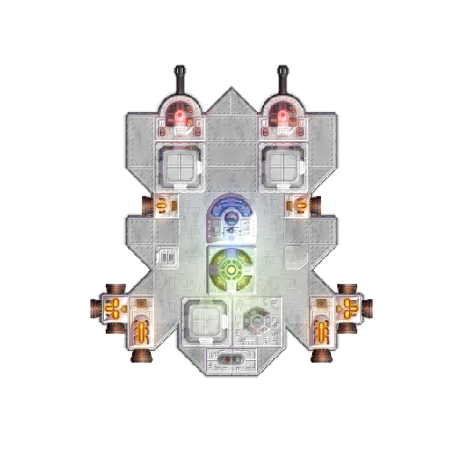
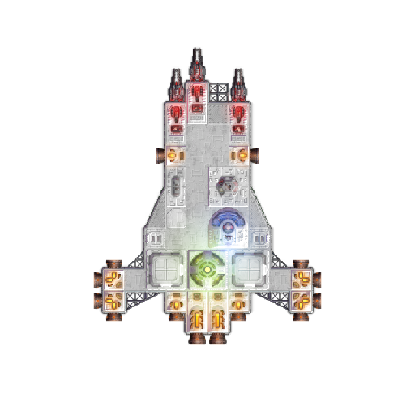
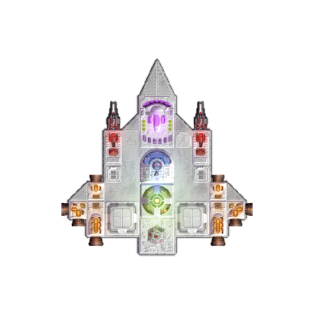

Pick Your Starting Vessel
Model-C
"The Cannoneer"
The Model-C is a modest cannoneer fighter designed for head-on, close combat. It sacrifices speed and agility for raw firepower and constitution as it is padded with a bit more armor. This model is also able to carry more resources as it has more available cargo space when compared to it's other counterparts. This is mainly to compensate for the fact that this ship uses ballistic weapons, so maintaining a healthy supply of ammo is utmost importance. Pirates are lurking everywhere, and every pilot must be prepared for the worst.
Model-L
"The Laser"
The Model-L is a balanced all-rounder where it has decent maneuverability, and a good set of laser-based weaponry. No ammo is required to fire these weapons, but they are quite hungry for energy. Always make sure your ship has enough power to keep these weapons online as they are your main defense against all foes. This ship comes with the standard amount of cargo space which consist of two 2x2 compartments. Although not as tanky as the Model-C, the Model-L has just enough durability to come out on top in a fight, but damage costs will need to be addressed. It's important to note that this is a range fighter, so you don't want to take on your fights too close. Thankfully, many thrusters are included in this model, so if escape is ever a required option, you can bet on a successful retreat in a pinch.
Model-S
"The Shield"
The Model-S is the smallest of the bunch with a frugal set of laser weaponry. It is light, it is fast, and is ideal for a hit and run playstyle. However, there is one aspect to this ship that sets it apart from the previous two models. Although this ship was meant to be a quick, low durability fighter, it's actually the strongest starting model thanks to its preinstalled energy shield. The energy shield soaks up all damage until it's power is drained, needs to be refueled by the ship's reactor. But that isn't really a huge issue, as it is very easy to maintain. The Model-S certainly takes its time to deal damage to enemy hulls, but it's energy shield allows it to win through sheer attrition. With the right piloting skills, it is possible to sustain in fights without suffering any damage, making the Model-S the best starting ship in the game.